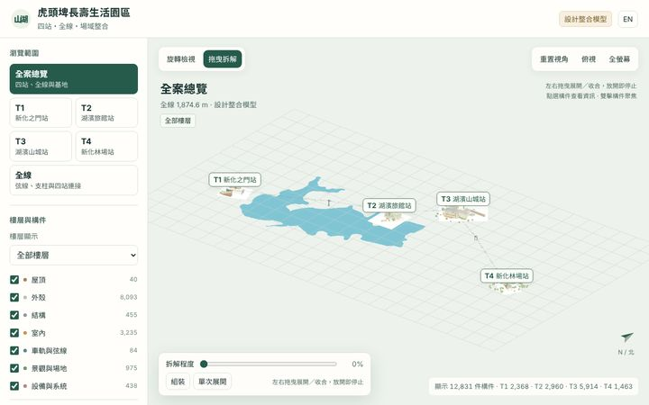
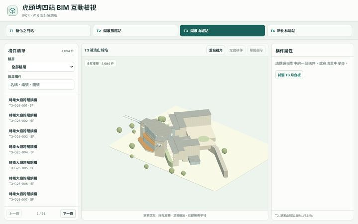
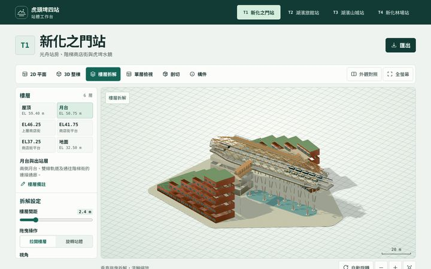
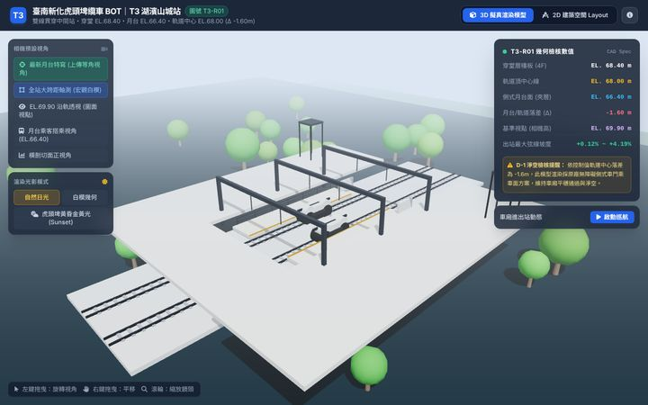
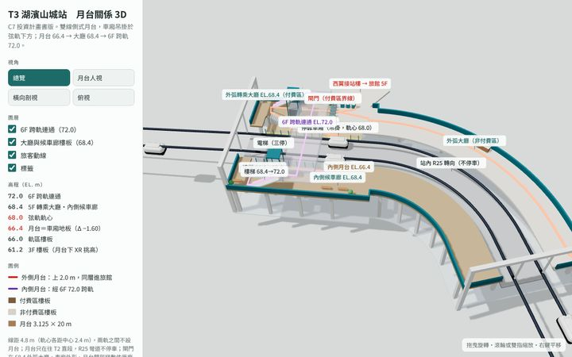
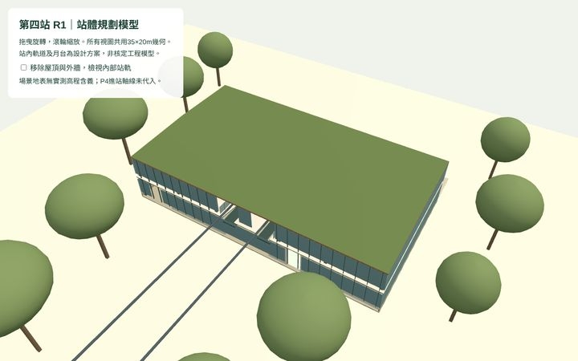
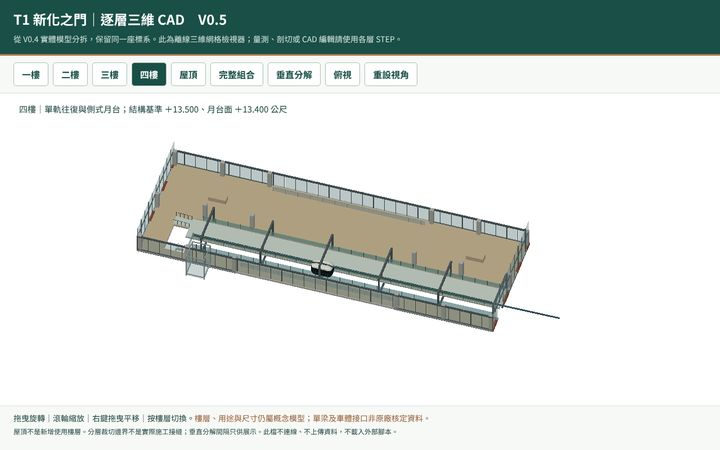

3D 模型 全案互動模型 V1.0 四站、全線與基地整合在同一個模型，可切換站別、樓層與構件類別，支援分層拆解與中英切換。全案與路線
從全線看起：整合模型、運行展示與基地位置。
4 項車站與建築
四站 BIM、站體建築與月台空間。
6 項
BIM，IFC4 四站 BIM 互動檢視 V1.6 T1 至 T4 四站 BIM 模型，可旋轉、依樓層篩選、搜尋構件並查看屬性；IFC 原始檔見頁尾下載。
3D 建築 四站站體工作台 同一視角看外觀、縱剖、橫剖、剖切深度與地下構件。
3D 建築 T3 湖濱山城站 建築與空間 T3 站建築、月台與空間配置的 3D 檢視。
3D 模型 T3 月台關係 雙線側式月台、吊掛車廂、大廳與跨軌連通動線。
3D 模型 T4 新化林場站 站體 R1 T4 站體模型，可旋轉檢視。
CAD，STEP T1 新化之門 逐層三維 CAD V0.5 一樓至屋頂逐層檢視，附各樓層 STEP 檔下載。結構與工程
站體構件拆解與纜索縱斷面計算。
3 項體驗與園區
旅客看到的纜車、園區與站內空間。
3 項歷史版本與原始頁
已被現行版取代或屬方案比選的頁面，保留供追溯，內容不再更新。
13 項，依取代關係分組
已由現行版取代
原始檔下載
模型與圖冊原始檔，可直接以專業軟體開啟。
基地航照疊位
- Google 地圖疊圖 KML155 KB
- PDF 圖冊18.6 MB
- 8K 航照疊位圖 PNG23.8 MB